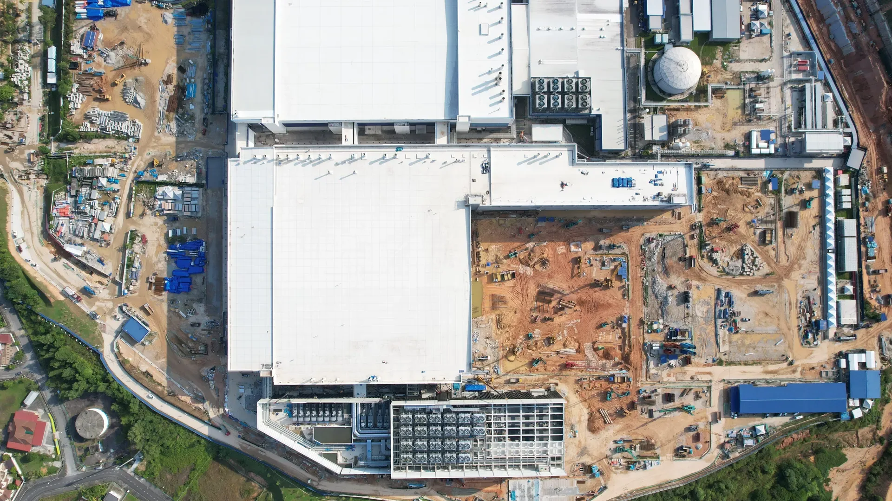
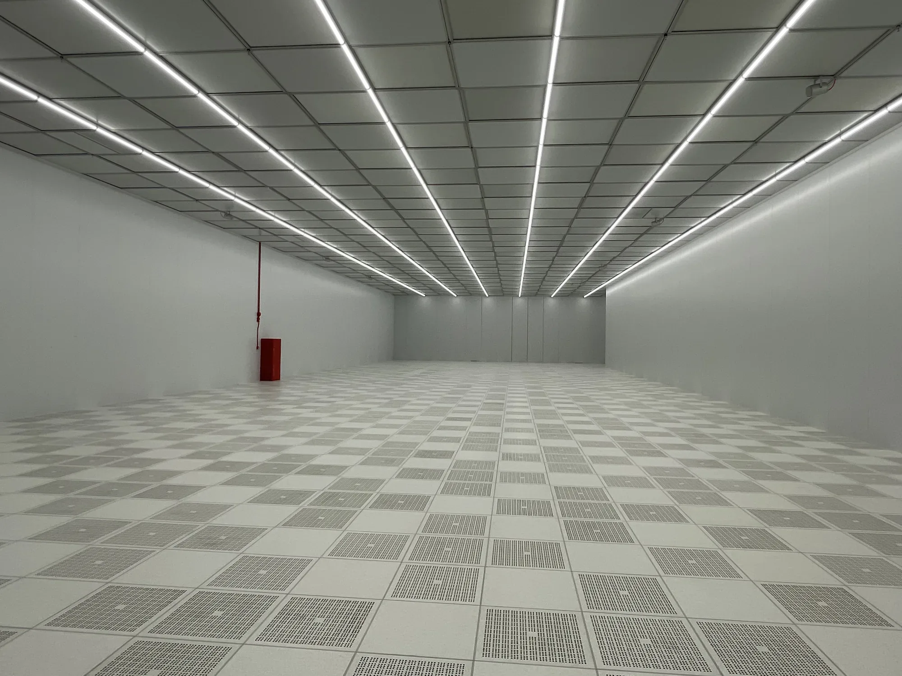
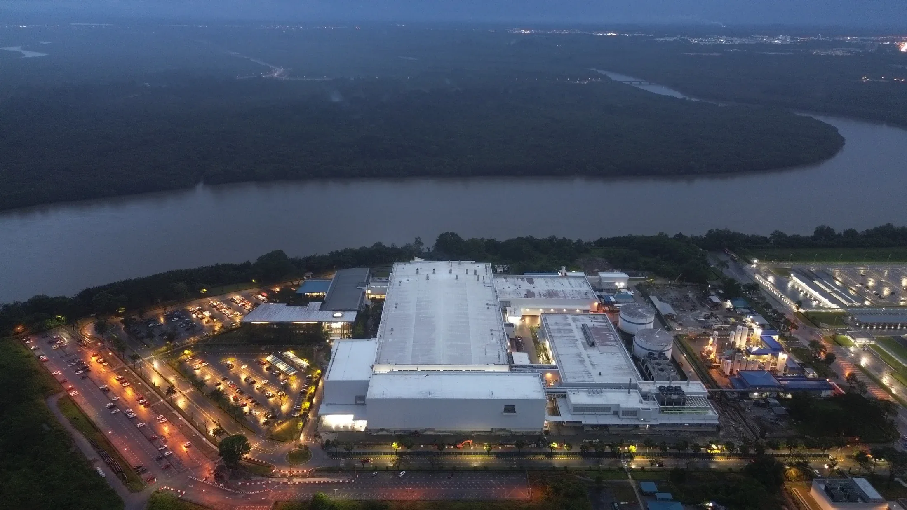

Back to work


IAQ

A website, identity book and SEMICON stand for the engineers of cleanrooms and controlled environments.
Cleanrooms, dry rooms and the systems that hold them in spec. The brand had to read as precise as the rooms.
The website: one accountable team, seven industries, seven countries.

Red is the disciplined accent, never a field colour. The identity book governs five core colours, three support greys and every printed piece.
For SEMICON Europa in Munich the same system becomes the stand: cleanrooms built to class, explained in one look from the aisle.
